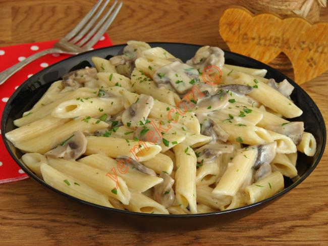

Kremali Makarna
Makarna tarifleri arasinda en sevilen tariflerin basinda o geliyor!
Tam ayarinda haşlanan makarna, kremali sosu içine çektiğinde tek başina
bile tabak tabak yemek isteyeceğiniz bir lezzete dönüşüyor
- KAÇ KİŞİLİK : 4 kişilik
- HAZIRLAMA SÜRESİ : 5 dakika
- PİŞİRME SÜRESİ : 10 dakika
Kremali Makarna Tarifi İçin Malzemeler
- 1 paket makarna
- 1 tatli kasigi tuz
- 1 paket krema
- 1/2 çay kasigi karabiber
- 1/2 çay kasigi kuru feslegen

Kremali Makarna Tarifi Nasil Yapilir
- Geniş bir tencerenin yarisina gelecek kadar su doldurun ve kaynamaya birakin
- Kaynadiğindaiçine tuzu atin ve 1-2 tur karistirin
- 1 paket makarnayi da kaynayan suya ekleyin ve makarna paketinde yazan pişirme süresi kadar haşlamaya
birakin
Makarna haşlandiğinda suyunu süzün ve kenarda bekletin.
- Bu sirada bir tavaya kremayi ekleyip kisik ateşte isitmaya başlayin.
- İçerisine tuzu, karabiberi ve kuru fesleğeni ekleyin.
- Hafifçe kaynamaya başlayıp kıvamı yoğunlaştığında içerisine haşlayıp süzdüğünüz makarnayı ekleyin.
- Tahta kaşıkla karıştırarak, makarna kremayı iyice çektiğinde altını kapatın..
- Servis tabaklarına servis edin. Üzerine isteğe göre rendelenmiş peynir ve bir tutam kuru fesleğen
atarak süsleyin. Afiyet olsun!